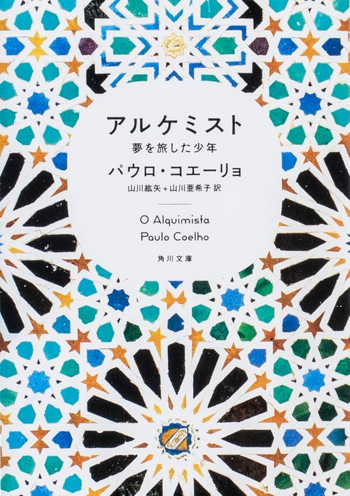
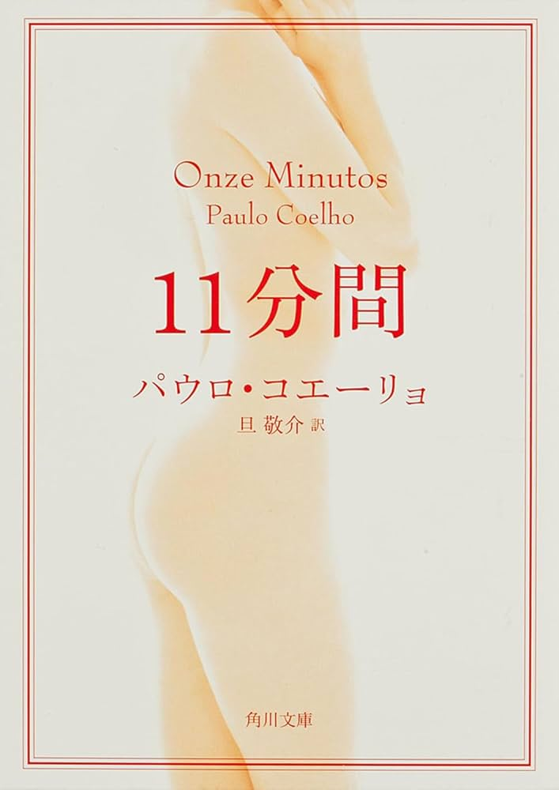
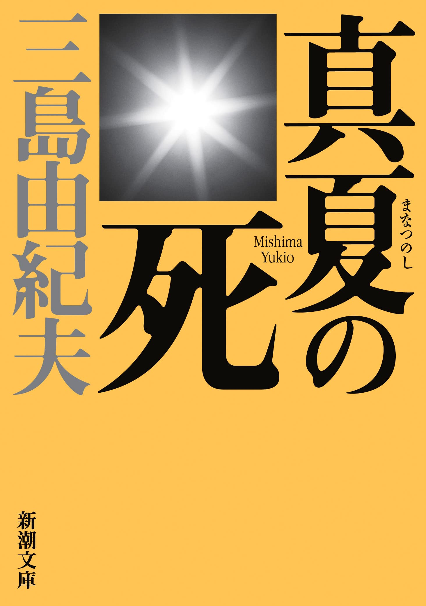

アルケミスト
アルケミスト
-夢を旅した少年-
著者: パウロ・コエーリョ
人生に迷ったとき、何度もページをめくってきた私のバイブルとも呼べる一冊。
自分の“本当にやりたいこと”に気づかせてくれたのも、
行動する勇気をくれたのも、いつもこの一冊でした。
読み終えるたびに、世界の見え方が変わるような感覚になります。

11分間
著者: パウロ・コエーリョ
恋愛小説…と思いきや、これはまるで心の教科書。
主人公マリアは、愛も人生もぜんぶ自分で選び取っていきます。
きれいごとでは語れない人生のなかで、「自分らしく生きるとは？」と何度も考えた一冊。
自分に正直でありたいあなたに、そっとすすめたい物語です。

真夏の死
著者: 三島由紀夫
どこかで見たことのある夏の景色が、まるで別物に感じられる。 海、蝉の声、眩しい日差し――そんなありふれた風景の中に、じんわりと“死”が滲んでいく。 静かで、苦しくて、でもなぜか目を離せない。 読むたびに感覚が研ぎ澄まされていくような、不思議な一冊。